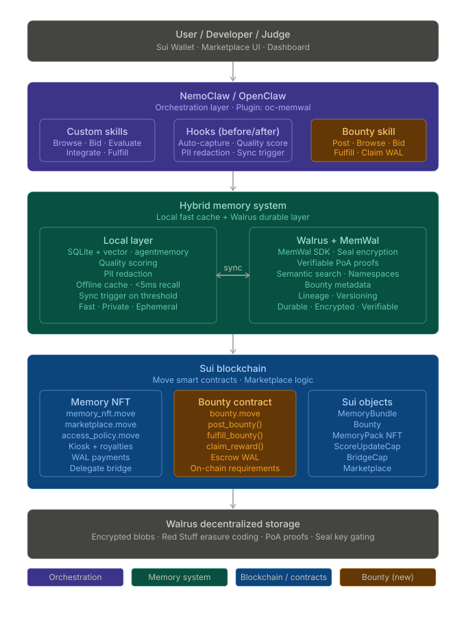

Documentation Hub
This page is the single entry point for reviewing our Walrus Track submission. Verify the project in under five minutes, then use the diagrams and file map below to confirm Walrus is on the critical path — not a slide-only story.
How to open this hub
Judges can use the live URL (no clone) or open the HTML file after cloning the repository.
| Live (recommended) | https://memwalpp-dashboard.vercel.app/doc-hub/ — works in any browser, no install. |
|---|---|
| Windows | After git clone: start docs\doc-map.html (Command Prompt or PowerShell from repo root). |
| macOS | After git clone: open docs/doc-map.html (Terminal from repo root). |
| File path | docs/doc-map.html in the repository — double-click in your file manager also works. |
What this submission is
Read this first (~60 seconds). Full narrative: SUMMARY.md.
| Project name | MemWal Agent Memory (repo: memwal-agent-memory). Legacy aliases MemWal++ / @memwalpp/* refer to the same codebase. |
|---|---|
| Official stack | Built on Walrus Memory (MemWal) — we wrap @mysten-incubation/memwal, we do not fork it. Relayer handles Seal encryption and embeddings. |
| Our extension | Hybrid memory (local SQLite + redact/quality gates → promote to Walrus) · MCP server for any agent · Mainnet Move marketplace and bounties tied to walrus_blob_id. |
| Workshop kit | Aligned with the official Walrus Memory Workshop curriculum. Judges verify this repository, not the external workshop kit. |
| North-star demo | Bounty posted → hunter recalls context → improves memory → promotes to Walrus → submit_fulfillment(blob_id) on Sui. |
Five-minute verification
No wallet, no MemWal API keys, no Sui CLI required. Exit code 0 on every command is the pass bar.
| Command | What exit 0 proves | Pass |
|---|---|---|
pnpm mcp:e2e |
MCP stdio server works; memory tools (remember, recall, sync) execute; chain tools return chain_not_configured without keys (expected). |
Required |
pnpm agent:demo |
Hybrid agent hooks run end-to-end: local store → quality gate → sync narrative with colored [1/N] steps. |
Required |
pnpm agent:bounty-hunt |
Poster + Hunter agents; recall injects context; bounty fulfillment path references Walrus blob semantics. | Required |
Walrus track scoring lens
Five questions judges ask — and exactly where to confirm each answer in this repo.
| Question | Where to verify | |
|---|---|---|
| 1 | Is Walrus on the critical path? | packages/core/src/memory/memory-sync-service.ts — pushOne sets walrusBlobId. Bounty: submit_fulfillment(blob_id) in Move. |
| 2 | Can I run it without setup pain? | Commands above → all exit 0. No credentials in default path. |
| 3 | Is the MemWal integration real code? | packages/memwal-client/ wraps SDK. packages/mcp/ exposes tools. Not mock-only. |
| 4 | Is there an on-chain story? | Mainnet package + objects in docs/deploy.md and sui-contracts README. |
| 5 | Can any agent use it? | pnpm mcp:e2e — stdio MCP is the universal access layer. |
Architecture at a glance
Dependency flows top → bottom. Canonical reference: ARCHITECTURE.md.
pnpm mcp:e2e and pnpm agent:demoMemorySyncService.pushOne
Critical data flows
Same diagrams as ARCHITECTURE.md §3.1. Each tab notes what judges should confirm.
remember() reaches the MemWal relayer. Success sets walrusBlobId on the local record.
sequenceDiagram
participant Agent
participant MCP as MCP Server
participant Sync as MemorySyncService
participant Local as Local SQLite
participant Durable as DurableMemoryStore
participant Relayer as MemWal relayer
participant Walrus
Agent->>MCP: remember(promote=true)
MCP->>Sync: store and promote
Sync->>Local: insert synced=false
Sync->>Sync: redactForUpstream + quality gate
alt passes gate
Sync->>Durable: remember(record)
Durable->>Relayer: remember(text)
Relayer->>Walrus: upload encrypted blob
Walrus-->>Relayer: blobId
Relayer-->>Durable: jobId and blobId
Sync->>Local: synced=true, walrusBlobId set
else gate fails
Sync->>Local: stays pending
end
recall exercises this path.
sequenceDiagram
participant Agent
participant MCP as MCP Server
participant Sync as MemorySyncService
participant Local as Local SQLite
participant Durable as DurableMemoryStore
participant Relayer as MemWal relayer
Agent->>MCP: recall(query)
MCP->>Sync: pullQuery
Sync->>Local: local search
opt durable hydrate
Sync->>Durable: recall(query)
Durable->>Relayer: recall
Relayer-->>Durable: decrypted hits
Sync->>Local: merge into cache
end
MCP-->>Agent: results
pnpm agent:bounty-hunt to see the agent side.
flowchart LR
A[Poster agent] -->|createBounty| B[Sui Move escrow]
C[Hunter agent] -->|recall| D[Hybrid memory]
D -->|pushOne| E[walrusBlobId]
E --> F[Walrus blob]
C -->|submit_fulfillment| B
F -.cryptographic proof.-> B
B -->|WAL payout| C
restore rebuilds the relayer index from Walrus blobs. See JUDGE_GUIDE.md Path B+.
sequenceDiagram
participant Op as Operator
participant Client as memwal-client
participant Relayer as MemWal relayer
participant Walrus
Op->>Client: restore(namespace)
Client->>Relayer: restore
Relayer->>Walrus: list owner blobs
Walrus-->>Relayer: encrypted blobs
Relayer-->>Client: restored counts
Key source files
Open these directly when scoring — no need to search the monorepo.
| File | Why it matters for judges |
|---|---|
| packages/core/src/memory/memory-sync-service.ts | Walrus promotion path: pushOne, pullQuery, conflict merge, walrusBlobId reconciliation. |
| packages/memwal-client/src/durable/durable-memory-store.ts | SDK wrapper with retry, wait flag, synced semantics. |
| packages/memwal-client/src/service.ts | Live MemWal service: remember / recall / restore against relayer. |
| packages/local-memory/src/redact.ts | PII redaction before anything leaves the machine. |
| packages/mcp/src/tools/handlers.ts | MCP tool implementations judges hit via mcp:e2e. |
| packages/sui-contracts/sources/ | Move modules: marketplace, bounty, memory_nft — sui move test in CI. |
| apps/agent-swarm/src/ | Judge demos: agent:demo and agent:bounty-hunt narratives. |
Document index
Judge-facing documents listed first. Filter to narrow the list.
| Document | Audience | Purpose |
|---|---|---|
| JUDGE_GUIDE.md | Judge | Primary 5–10 min runbook |
| SUBMISSION.md | Judge | Hackathon submission brief |
| SUMMARY.md | Judge | Role and benefits (1 page) |
| judge-walrus-memory-workshop.md | Judge | Official workshop → this repo |
| companion-mvp-special-one-agent.md | Judge | Production MVP — Mr. Toxic Special One |
| judge-final-checklist.md | Judge | Maintainer verification log |
| ARCHITECTURE.md | Judge | Canonical system design + Mermaid |
| deploy.md | Judge | Mainnet IDs and PTBs |
| memwalpp-slides.html | Judge | 10-slide demo deck |
| PROJECT-STRUCTURE.md | Contributor | Repo tree and package rules |
| specs/openspec-memwal-agent-memory.md | Contributor | Master OpenSpec |
| mcp-setup.md | Product | MCP install guide |
| ROADMAP.md | All | Phase completion status |
| CHANGELOG.md | All | Release notes |
Other readers
Contributor and product paths — not required for core Walrus scoring.
Contributors
- README.md
- ADR-013 — package boundaries
- walrus-memory-alignment.md